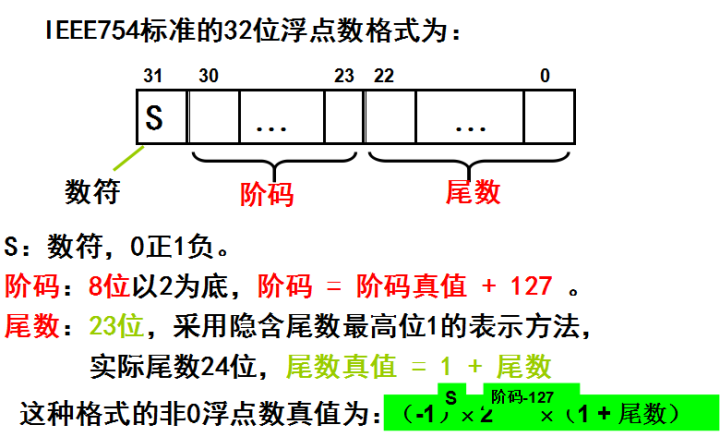
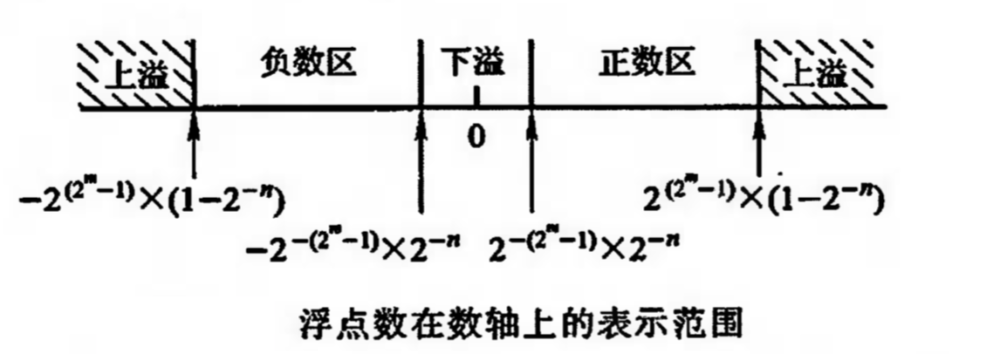

在Java中,整数在內存中都是以补码的形式存在的, 主要目的是统一加减运算，那么浮点数是以什么形式存在的呢？本文结合Java的Float类，来探秘一下浮点数的秘密。
IEEE754标准
现在的计算机，大多数都是以IEEE754作为存储和运算浮点数的标准，存储信息大致包括如下三个部分
数符[sign]、阶码（含阶符）[exponent]、尾数[fraction], 对于不同长度的浮点数，其阶码和尾数的分配位数不一样，具体如下：
| 浮点数类型 | 数符 | 阶码 | 尾数 | 总位数 | 偏移量 |
|---|---|---|---|---|---|
| 短浮点数 | 1 | 8 | 23 | 32 | 127 |
| 长浮点数 | 1 | 11 | 52 | 64 | 1023 |
| 临时浮点数 | 1 | 15 | 64 | 80 | 16383 |
下面以短浮点数（32位）为例，详细说明

阶码
阶码决定了浮点数的范围，阶码一般用移码表示，即在真值的基础上加上一个偏移量, 方便阶码比较，因为移码越大，真值也越大。短浮点数的范围为-2^127 ~ +2^127，也即-3.40E+38 ~ +3.40E+38；长浮点数的范围为-2^1023 ~ +2^1023，也即-1.79E+308 ~ +1.79E+308。
尾数
尾数决定浮点数的精度，尾数一般采用规格化处理【阶码为最小时例外】，即通过向左移1位尾数阶码减1（左规）或右移1位尾数阶码加1（右规），让尾数的第一位为1，规格化有利于浮点数的比较。IEEE754的规格化采用隐藏尾数的最高位表示法，这样实际尾数的长度比定义尾数多1位，这样能尽可能提高浮点数的精度. 短浮点数尾数是23位,对应10进制6~7位有效数字，长浮点数尾数为52位，对应10进制15~16位有效数字。
1 | public class Test { |
溢出
浮点数的溢出包括上溢和下溢。上溢是指浮点数的阶码超过了最大值的表示范围，IEEE754定义了正无穷和负无穷的数值，所有的浮点数必须大于负无穷，小于正无穷，上溢时CPU需要停止运算，处理溢出中断；
下溢是指浮点数阶码小于最小值的表述范围，即存在最大的负浮点数和最小的正浮点数，如果大于最大的负浮点数且小于0或小于最小正浮点数且大于0，则为下溢，下溢一般把数据清零，直接当0处理，CPU正常运行。

疑问
-289.53125f在內存是怎么样保存的？
第一步：将整数和小数部分分别转换为二进制， 整数部分采用除2取余办法得到100100001，小数部分采用乘2取整的方法得到0.10001， 合起来尾数为10010000ß1.10001；
第二步：规格化。将尾数右移，同时阶码加1（即右规），得到尾数1.0010000110001, 阶码真值+8，注意IEEE754采用隐藏最高位1的表示法，短浮点数尾数为23位，后面补0，所以尾数为00100000110001000000000；
第三步：将阶码真值转为移码。短浮点型阶码为8位，偏移量为127，所以最后阶码为：10000111；
第四步：加上符号为1，得到最终的二进制1,10000111;00100001100010000000000。1
2System.out.println(toBinaryStringFormat(-289.53125f));
//out: 1,10000111;00100001100010000000000IEEE754 把数符放到第一部分，阶码放到第二部分且用移码表示，尾数放到第三部分且规格化的目的？
都是为了方便浮点数比较，如果数符不同，比较一位就能区分大小，显然正大负小，如果数符相同，比较阶码，由于尾数都是规格化的且阶码是用移码表示，所以阶码大的，数值越大，如果阶码还相同，再去比较尾数大小，所有过程等价于两个有符号整型的比较。IEEE754 短浮点数总共32bit，最多有区别地表示2^32个数值, 为啥却能表示那么大的浮点数范围（-3.40E+38 ~ +3.40E+38）？
由于任意范围的浮点数个数都是无穷的，浮点数不能像整型那样，覆盖表示范围内的所有数值，所以才会有精度问题，通常绝对值越靠近0的，覆盖的越密，越越远的也越稀疏，没有覆盖到的值，与最近的值相等，类似于连续值到离散值的采样。1
2
3
4
5
6
7
8
9
10
11
12
13
14
15
16
17float f3 = 100000.001f;
float f4 = 100000.0f;
float f34 = Float.intBitsToFloat(Float.floatToRawIntBits(f4));
float f5 = 999992323.0f;
float f6 = 999992300.0f;
float f56 = Float.intBitsToFloat(Float.floatToRawIntBits(f6));
float f7 = 0.001f;
float f8 = 100000.0f;
System.out.println(f3==f4);
System.out.println(f34);
//true 100000.0f f3右规丢失精度, f4可以精确表示, 內存值为100000.0f
System.out.println(f5==f6);
System.out.println(f56);
//true 999992320.0f f5,f6右规均丢失精度，內存值为999992320.0f
System.out.println(f7 + f8);
//100000.0f 浮点数相加过程中，需要对阶，阶数小的向阶数大的对齐，
// f7在对阶过程中精度丢失，变成了0
Java Float类
Java Float类是对原生数据类型float的包装类，只有一个私有的不可变的(final)成员变量value, Float继承自Number抽象类（主要包含了各种基本数据类型转换方法），实现了comparable接口。
Float类的几个常量和特殊值
1 | System.out.println(toBinaryStringFormat(Float.POSITIVE_INFINITY)); |
剩下的MAX_EXPONENT=127，MAX_EXPONENT=-126分别表示有穷数的最大阶码真值和规格化的尾数的最小阶码真值，对于-127的阶码，可以是非规格化的尾数
Float类的方法
- public static native int floatToRawIntBits(float value) 原生方法，把一个浮点数转换为IEEE754规则填充的bits对应的int值；
public static int floatToIntBits(float value) 调用1的方法，把所有的NaN都用Float.NaN对应整数值返回, 因此，所有NaN的返回值都一样的；
1
2
3
4
5
6
7
8
9
10public static int floatToIntBits(float value) {
int result = floatToRawIntBits(value);
// Check for NaN based on values of bit fields, maximum
// exponent and nonzero significand.
if ( ((result & FloatConsts.EXP_BIT_MASK) ==
FloatConsts.EXP_BIT_MASK) && //阶码为最大值 且
(result & FloatConsts.SIGNIF_BIT_MASK) != 0) //尾数非0
result = 0x7fc00000;
return result;
}hashcode and equals 使用floatToIntBits作为hashcode, equals比较的也是floatToIntBits是否相等， 所以NaN!=NaN，但是equals, -0.0f == 0.0f, 但是 not equals;
- public static native float intBitsToFloat(int bits) 原生方法，把int代表的IEEE754规则填充的bits转换为浮点数；
public static int compare(float f1, float f2) 按照f1,f2转换的floatToIntBits对应的有符号int比较大小，所以，compare(NaN,NaN) == 0, compare(-0.0, 0.0) == -1
1
2
3
4
5
6
7
8
9
10
11
12
13public static int compare(float f1, float f2) {
if (f1 < f2) // 任意一个参数是NaN, 都为false
return -1; // Neither val is NaN, thisVal is smaller
if (f1 > f2) // 任意一个参数是NaN, 都为false
return 1; // Neither val is NaN, thisVal is larger
// Cannot use floatToRawIntBits because of possibility of NaNs.
int thisBits = Float.floatToIntBits(f1);
int anotherBits = Float.floatToIntBits(f2);
return (thisBits == anotherBits ? 0 : // Values are equal
(thisBits < anotherBits ? -1 : // (-0.0, 0.0) or (!NaN, NaN)
1)); // (0.0, -0.0) or (NaN, !NaN)
}parseFloat 是将字符串转换为浮点数，如果无法转换，抛NumberFormatException, valueOf是一个boxing操作，在数值赋值给一个Float类（如Float a = 2.1f）会默认调用该方法。
总结
浮点数在编程中经常用到，如果使用不当，会出现一些意想不到的错误，很难排查，只有明白底层的存储和运算规则，才能做到胸有成竹。关于浮点数的加减乘除的实现，可以参考唐朔飞《计算机组成原理（第2版）》中央处理器一章。
参考资料
- 唐朔飞.《计算机组成原理（第2版）》 高等教育出版社[M]
- IEEE 754格式是什么?